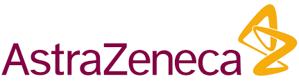
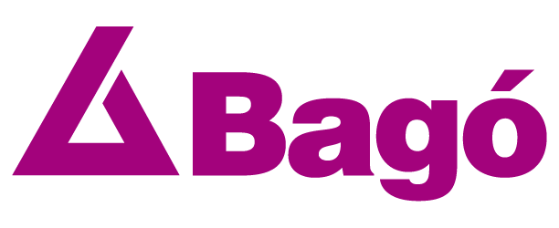
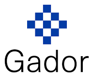
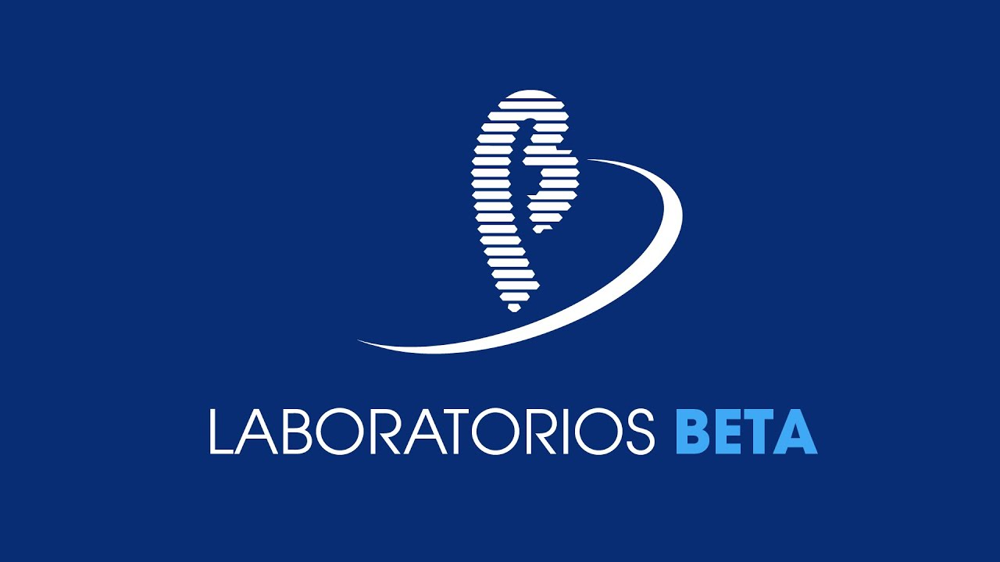
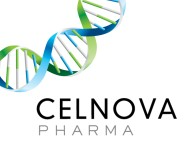
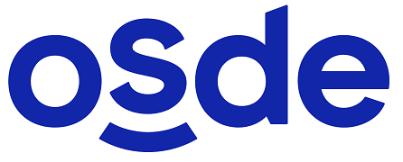
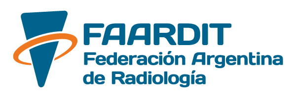
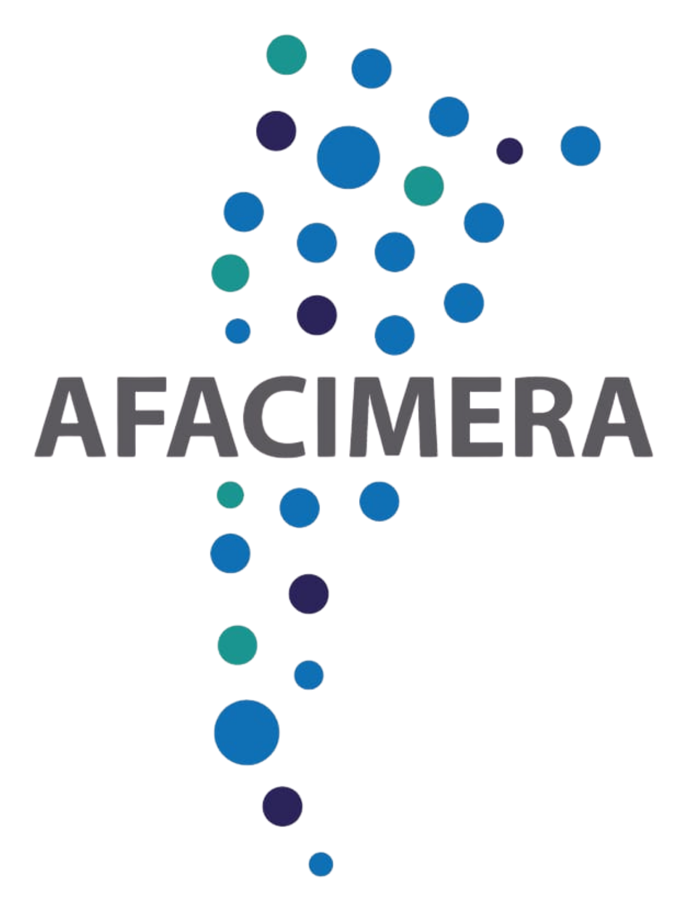
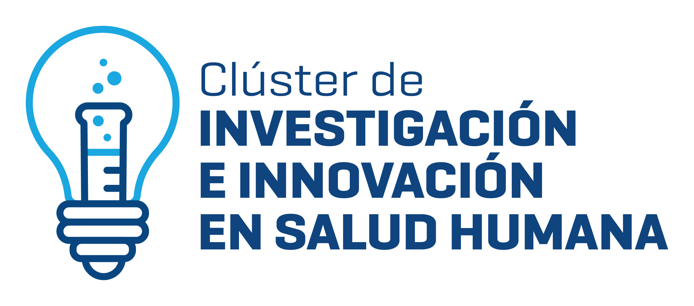
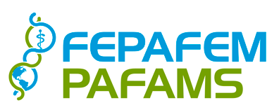

Construido por quienes conocen el terreno.
Somos médicos e ingenieros. Diseñamos cada sistema sobre un entendimiento directo del problema clínico y operativo.
IA aplicada · Especialistas en salud
Ayudamos a organizaciones a aplicar inteligencia artificial, del diagnóstico a la puesta en producción. Formamos profesionales para usarla con criterio propio. Somos especialistas en salud, abiertos a toda ciencia aplicada.
¿Por dónde empezar?
Consultoría, desarrollo a medida, datos e investigación. Identificamos dónde la IA genera valor y la llevamos a producción.
Cursos para profesionales y principiantes, y capacitaciones in-company para que las organizaciones formen a sus equipos. Aprenda a usar la inteligencia artificial con autonomía, sin tecnicismos.
Servicios
Por qué MAJUL AI
Somos médicos e ingenieros. Diseñamos cada sistema sobre un entendimiento directo del problema clínico y operativo.
Trabajamos por fases, con entregas funcionales y métricas verificables, hasta que el sistema opera en producción.
Una herramienta que el equipo no adopta no genera valor. Integramos cada solución en el flujo de trabajo de los profesionales que la operan.












Nuestras unidades
MAJUL AI reúne unidades especializadas que comparten un mismo foco: aplicar inteligencia artificial con rigor y propósito.
Medios y canales
Compartimos novedades, conferencias y el análisis del Dr. Majul en nuestras redes. Estos son los canales oficiales de MAJUL AI y del Dr. Majul.
Preguntas frecuentes
No hace falta saber de tecnología para empezar. Estas son las dudas más comunes, y si tiene otra, escríbanos.
Hacer otra consulta →